Azure Disaster Recovery
Create a Azure Disaster Recovery Demo with Backup and including RPO and RTO
Introduction & Inital Blind Goals
I wanted to explore the disaster recovery side of cybersecurity, what kind of things were expected, and what kind of technicalities did I have to learn.
Goals : Create 2 Policies, Create a VM in Azure, Do the RPO matrix, Do the RTO, Do the backups, Document the process.
Goals are usually vague because I don't know much about the subject and I am trying to learn about it. So having a precise goal makes little sense because when I set up the goals, I am never totally sure what is expected of me or the project I am creating. But after that, the more I learned about the topic and the more I learn about what each component is suppose to be and do, the more I adjust the trajectory of the project towards what make more sense for the project; but these were the initial goals.
Tools
Azure B2S VMs / Nginx for the app / Azure Backup / Azure Site Recovery for cross-vision.
Steps
Provisioning
I have a budget of $100 from the Azure student Liscense provided by my university, so I had to be strategic. The first thing to do was put a budget in place.
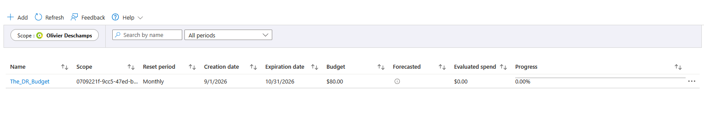
Then I had to create the VM and I called it "FinVM" (for "finance"), I wanted to create a fake company with fake documentations for the RTO and RPO as well. So I needed a name for the company and some departments. I didn't know how many VM I was going to create, so I started with one for testing purpose. I chose the B2S series because it's a versatile and cheap VM, the D series is obviously better, but for a project of this size with a small budget, it was way easier to spin off and have it running early and it gave me more flexibility. I would have probably chose the B1S series, but it wasn't available at the time.
The next step was to SSH inside the VM and I had my first little notable struggle. It was the SSH key being too exposed on Windows (inside my Downloads folder) and I never had this issue before. It was a quick fix with by changing the permissions but I still think it was notable.
The App
After that, I created the app. So I just installed nginx. Created a small demo app. Nothing super complicated, but it needed to be done to simulate the app a company would use.
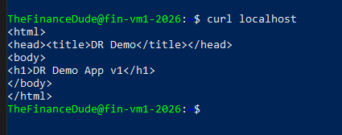
Allowed HTTP to see it on the internet (allowed for 10mn for testing)
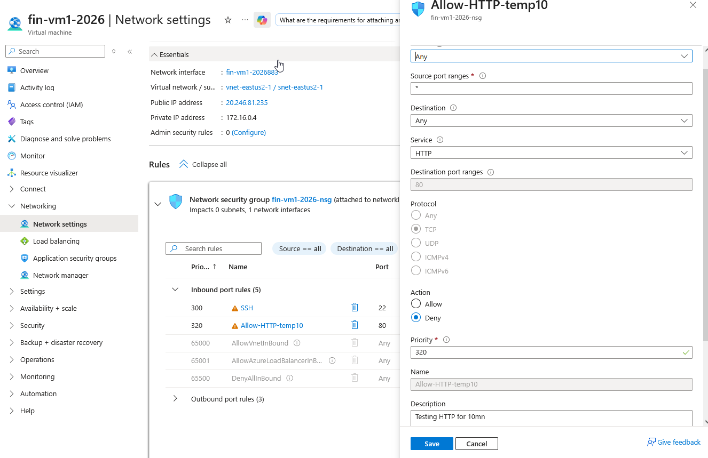
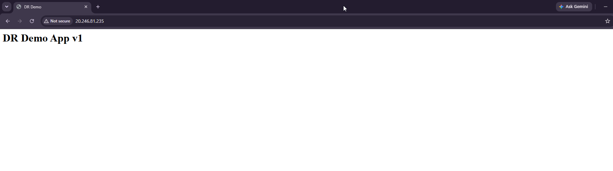
Backup of VM
Then I started the backup process, so this is where everything a disaster recovery related starts. So I had to create the backup and then later on replicate them on another region. I did not wait for the scheduled backup. I just did it manually and then checked the health of the backup to make sure everything was okay.
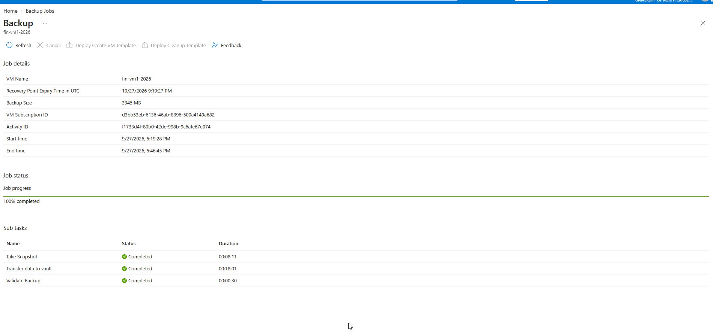
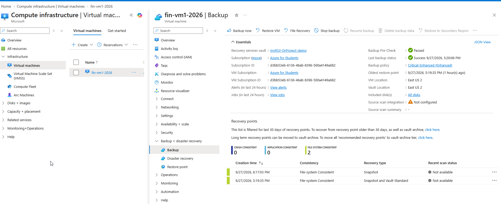
Backup Policies
So then I created the backup policy. So these are supposed to be in relation with the RTO and RPO. And that's basically, I had to fix the, I kind of fixed some random numbers really, but I just did retention for 30 days. And yeah, if for the more critical stuff, I just increased the retention.
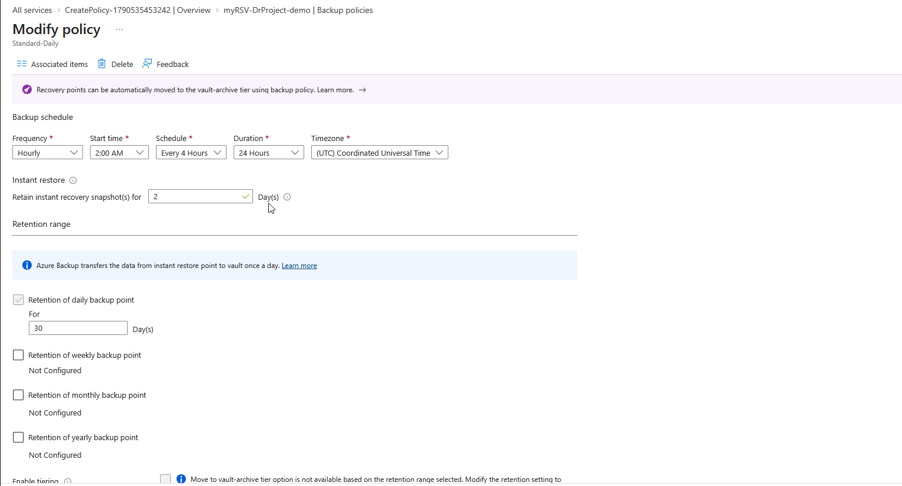
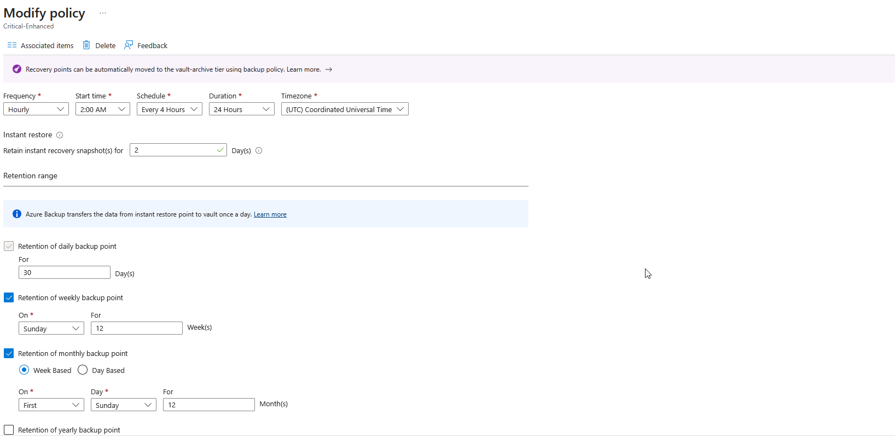
Site Recovery
This is where the replication process starts and I had multiple issue within this step. The first one was there is an automation account that is created automatically when setting up the replication process, and it wouldn't let me create one because of the license (my Azure Student Liscence). So, I had to find a workaround with it, which was to create a Microsoft normal automation account, not an automatic one created with the replication.
Once this was done, the replication still wouldn't start but this time because of the region. Again, the license only has access to certain regions, and I was initially wanting to go to "US Central" because the Microsoft documentation was saying that it was the region that had the best connection with US East 2 (my region). I couldn't do that, so I ended up doing what I could do (the region my license had access to), which was South Central. Honestly, for the purpose of the demo, it doesn't change much, Both are far enough away from US East 2, so that in case of a major disaster, it would replicate correctly. It's just that I had to find a workaround for the license.

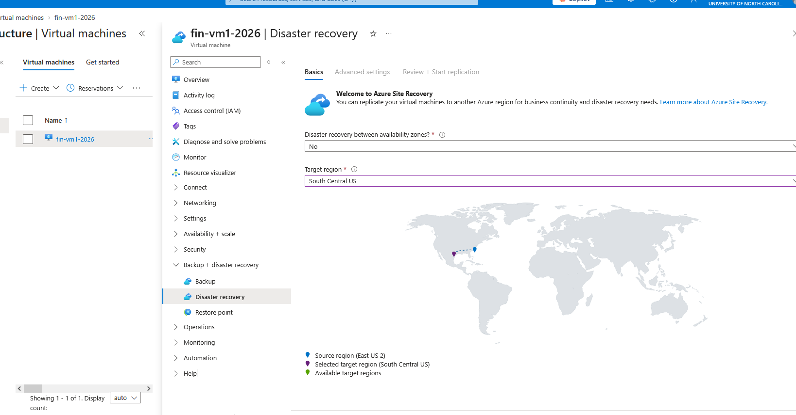
Small thing worth noting here. The first one was the GPU VM auto-assignment, it was on the highest setting the VM could do (I don't have a screenshot unfortunately). It was more of a cost risk than a technical risk, but on small budgets it can make a difference, so it was something to adjust.
Then I started the replication.
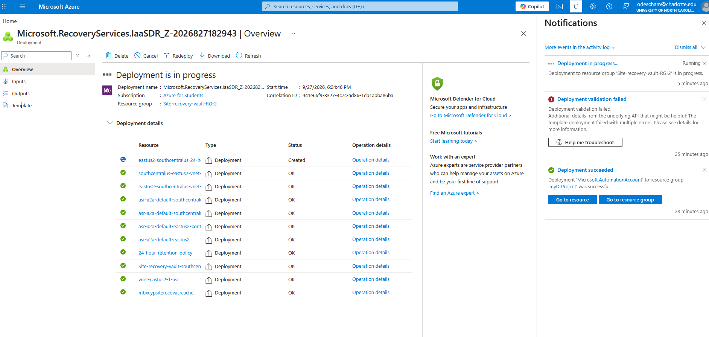
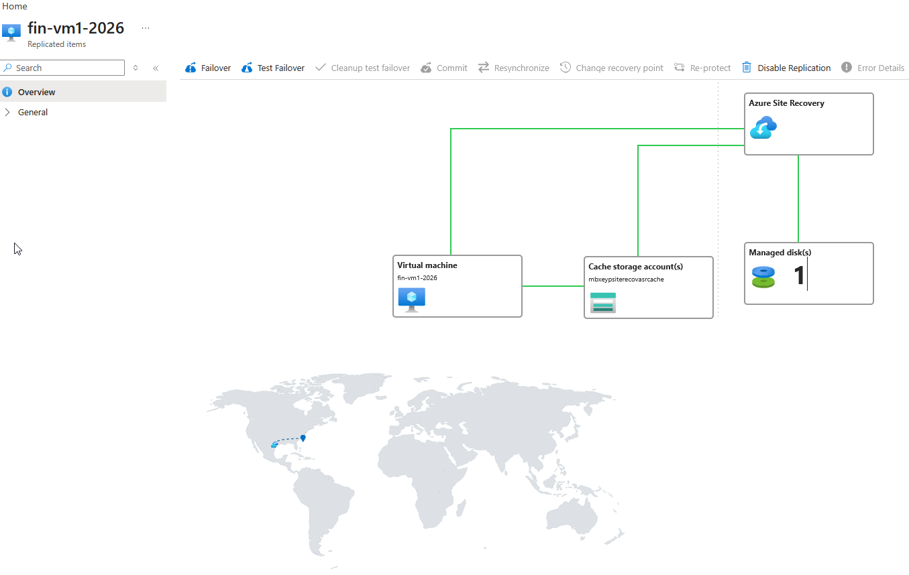
Recovery Plan
After the replication, it was time to create a recovery plan. So a recovery plan is a group created for a group of VN for the failover test that we're going to try afterwards for the RTO and RPO. In this case, I just created the recovery plan and called it web app DR plan.
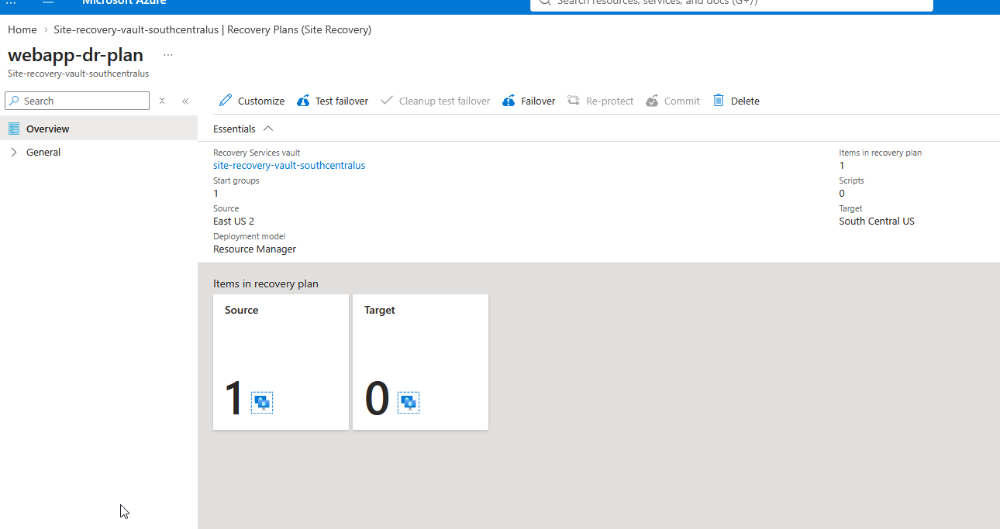
First Failover Test
After the replication was finished it was time to do the failover test, which is basically simulating a disaster is happening in the first region and there is a problem with the data center. So all the VM are automatically replicated inside another region and then started for the site to stay up on the internet.
When I wanted to start the fail the first failover test I couldn't because there was no CPUs allocated for my VM. I couldn't understand why because the VM was running smoothly. For the troubleshoot I went to change the quotas for the VM to add more CPUs, and It is when it was revealed to me that no CPUs were available on US Central at the same. This gave me 2 options, come back at a later time and pray that there would be CPUs available for this Series of VM on this region on that day, or restart the replication process on another region where CPUs were available and continue there. I chose the latter because waiting for multiple days to get available CPUs could be an issue for the budget.
I will spare the details of me redoing the replication, so I had to redo the whole setup to Canada Central. Some names might appear a little bit inconsistent Because it was originally in South Central.
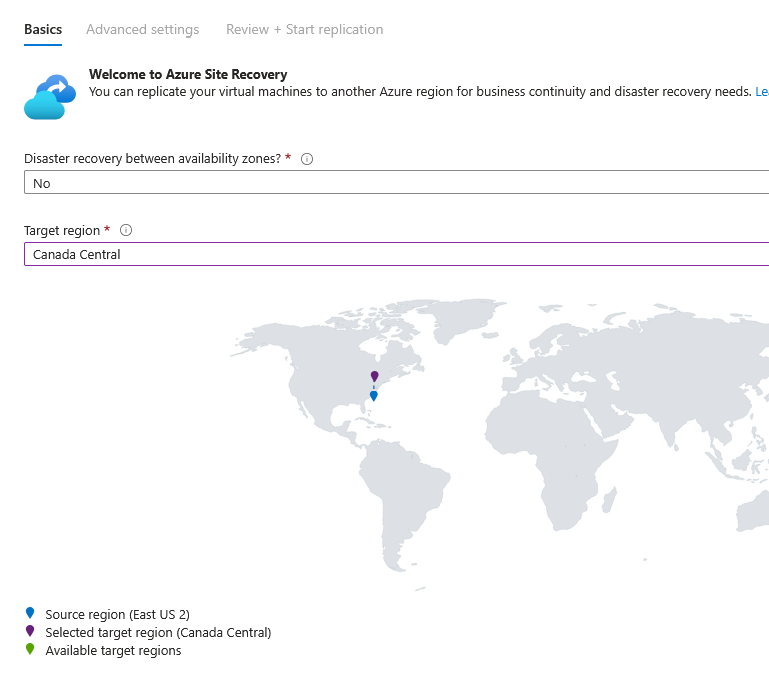
Canada Central, as you can see on the map, might be a little bit too close to US East 2 to be considered a good spot for disaster recovery purposes. But again, I didn't have any choices because it was the only one available for the quota changes. In a real world scenario, I wouldn't have chosen Canada Central. But in this specific case, I think it's totally acceptable.
Quotas Changes
Finally, I adjusted the quota for the B2s VM to 4 CPUs and then it went up and running and then I could start the failover test.
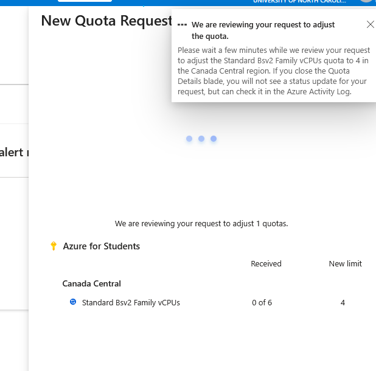
Second Failover Test
I also use a stopwatch for when I did this failover test just to compare the real time, the real world time compared to the Azure time given.
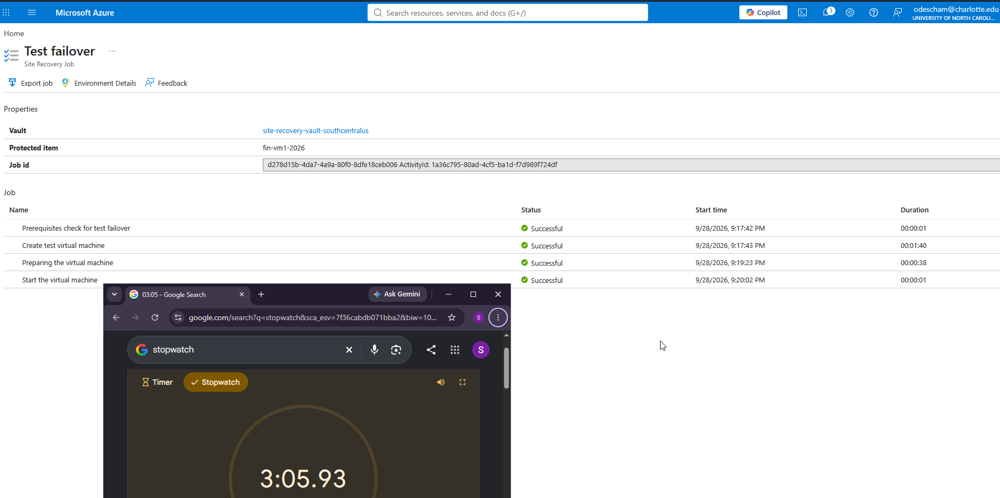
The real-time results for the test of the test failover were closer to 3 minute because there was a lot of prerequisite for the checks for the test failover but for the creation of the virtual machine and and the actual start it was a much shorter
The Vm Created from the Fail Over Test
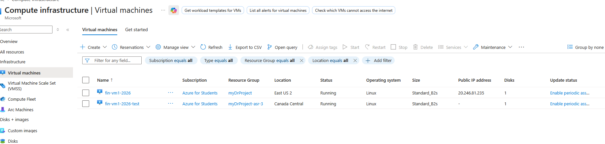
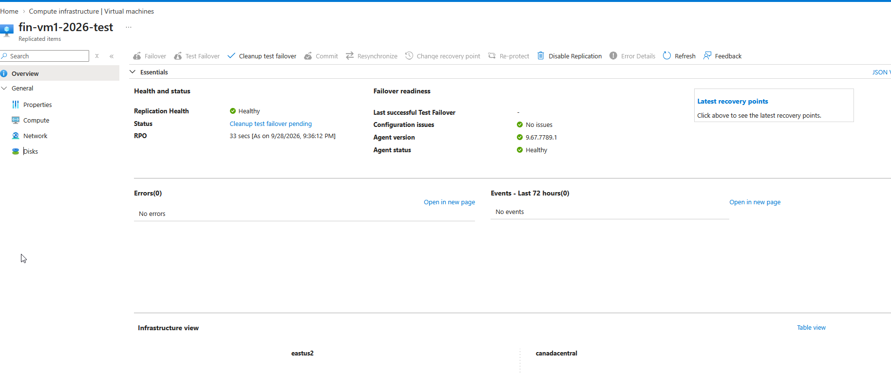
Last thing to cleanup the failover test manually to not wast ressources and it was done
Result
The results were, a RPO of ~33 sec, a Real world RTO of ~3mn (~2m according to Azure). Two backup policies have been created.
So initially I thought it would take about 30 minutes give or take to do the the RPO/RTO which would be just replicating the VM to another region. I did not anticipate that if we do setup azure in advance it drastically reduces the amount of work so the replication is quite quick. It went from an expected 30 minutes to a ~33 second RPO which is pretty good. The real-time RTO was closer to three minutes but I don't think it was an issue.
For the other goal, it was to create two policies but initially my policies were supposed to be Word documents where I set up more RPO/RTO metrics with the time objective and for both of them. But instead of creating Word documents I ended up creating backup policies for the VM which also count as policies but I just changed the type of policies. The goal for the RPO metrics was that if I had multiple departments depending on the departments and the critical infrastructure I was going to have different RPOs for each of them but since I created only one VM for one department which was the finance department I didn't need the metrics.
Takeaways
I wasn't sure what to expect from Azure in terms of replication but they have done a lot to make the process as smooth as possible without removing any options. There was definitely some tricky things and a lot of things to troubleshoot but it was an enjoyable experience.
This was the first project I documented with the website portfolio in mind. And so there was more to it than just the disaster recovery. And I'm gonna improve on the portfolio side for the reader experience but I think it turned out quite well. I had a few challenges with the OS of Linux and region licensing.
I think maybe I took too many screenshots, so this is something to keep in mind for the future projects. I know that it's better to visually show what I did but maybe it may have been little bit too much. Keeping a better balance between explaining and screenshots but maybe it was a good amount, I'm not sure yet